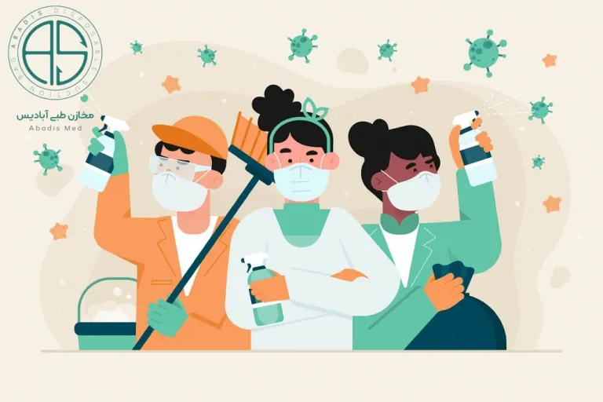

عفونت های بیمارستانی شایع
از جمله شایعترین عفونت های بیمارستانی می توان به عفونت های ادراری اشاره کرد که به دلیل عدم کفایت روش های ضدعفونی در هنگام قرار دادن سوند ایجاد می شود و حدود ۴۰ درصد موارد را به خود اختصاص می دهد.
– زخم های جراحی از دیگر عفونت های بیمارستانی می باشند که ۱۰ درصد کل عفونت ها را تشکیل می دهند و در اعمال جراحی هایی که میکروارگانیسم های زیادی وجود دارد حتی به بالاتر از ۳۰ درصد هم می رسند.
– گذاشتن کاتتر، متصل کردن بیمار به ونتیلاتور، دیالیز، ،TPNتراکئوستومی و غیره از جمله اقداماتی هستند که می توانند به عفونت های بیمارستانی منجر شوند.
نکته: بنابراین رعایت اصول بهداشتی و ضدعفونی توسط پزشکان، پرستاران و کارکنان بیمارستان در بخشهای مختلف بخصوص بخش هایی که امکان عفونت در آنها بالاست مثل اطاقهای عمل، ،CCU ،ICUدیالیز و زایشگاه ها که شرایط خاص دارند و بیمارانی با شرایط ویژه و ضعف سیستم ایمنی در آنها بستری می باشد، بسیار حائز اهمیت است.
میکروارگانیسم های شایع
میکروارگانیسمهای شایع در عفونتهای بیمارستانی عبارتند از: اشرشیاکلی، سودوموناس، استرپتوکوک، استافیلوکوک طلایی که هریک مسئول گروه بخصوصی از بیماری ها هستند.
عامل اصلی عفونتهای اداری : (Gram Negative Bacillus) GNBو اشرشیاکلی (E.coli)
عامل اصلی عفونتهای تنفسی: کلبسیلا
عامل اصلی عفونت زخم های جراحی : استافیلوکوک اورئوس
عامل اصلی عفونت ناشی از گذاشتن کاتتر های داخل عروقی : استافیلوکوک اپیدرمیس
عامل اصلی در عفونت های سوختگی: سودوموناس آئروژینوزا
راه های پیشگیری از عفونت های بیمارستانی
برای پیشگیری از بروز عفونت های بیمارستانی می توان به موارد زیر اشاره کرد:
آلودگی زدائی
آلودگی زدائی می تواند شامل حالات زیر شود:
الف) فردی: شامل تمام اقداماتی می شود که بیماران و کارکنان بیمارستان را تا حد امکان از عوامل عفونی دور نگه می دارد مثل شستشو و ضدعفونی دست ها، رعایت اصول بهداشتی
ب) جراحی: شامل روش هایی است که از ورود میکروارگانیسم ها به داخل زخم یا بافت های بیمار جلوگیری می کند. در این حالت باید تمام ابزار و وسایل جراحی (باند، دستکش، بخیه ها، لباس و سایر اجسامی که در تماس با بیمار هستند) استریل شده باشند، محیط اطراف بهداشتی باشد و هوا از فیلترهایی عبور داده شود تا از نظر میکروبی به حد مطلوب و قابل قبول رسانده شده باشد.
ضد عفونی کردن (Disinfection):
در ابتدا توجه به این مسئله بسیار حائز اهمیت است که عمل شستشو یا ( )Cleaningو تمیز کردن مواد آلی و سایر
آلودگی ها قبل از ضدعفونی کردن و یا استریل کردن امری ضروری است (به نمودار زیر -سیکل ابزار- توجه کنید)
تعریف- ضدعفونی کردن یا گندزدایی عبارت است از حذف کامل و یا قابل قبول کلیه میکروارگانیسم هایی که بر روی سطوح یا اشیاء بی جان وجود دارند.
(توجه: برای از بین بردن اسپور باکتری ها، نیاز به اعمال روش های خاص ضد عفونی و یا استفاده از مواد گندزدای سطح بالا در مدت زمان طولانی می باشد).
عوامل گندزدا به سه دسته تقسیم می گردند :
High Level Disinfectant
Intermediate Level Disinfectant
Low Level Disinfectant
1- ضدعفونی کننده های سطح بالا، شامل موادی هستند که بر روی کلیه میکروارگانیسم ها در شکل رویشی یا فعال (vegetative) میکوباکتریوم ها مانند باسیل سل (توبرکلوز Tb) تعدادی از اسپورها، تمامی قارچ ها و ویروس ها ( کوچک یا بزرگ، فاقد یا دارای پوشش envelope) اثرداشته و آنها را از بین می برند.
2- ضدعفونی کننده های سطح متوسط، شامل موادی هستند که بر روی کلیه میکروارگانیسم های در شکل رویشی، میکوباکتریوم ها مانند باسیل سل (توبرکلوز Tb) و تمامی قارچ ها موثر بوده ولی روی تعدادی از ویروس ها اثر ندارند ( مانند ویروس های کوچک و فاقد پوشش)، این دسته از مواد، روی اسپور باکتری ها بی تاثیرند.
۳- ضدعفونی کننده های سطح پایین، شامل موادی هستند که بر روی تمامی میکروارگانیسم ها در شکل رویشی موثر هستند. این مواد روی میکوباکتریوم ها مانند باسیل سل و نیز اسپور باکتری ها هیچ اثری ندارند و روی تعدادی از ویروس ها از جمله ویروس های کوچک و فاقد پوشش و تعدادی از قارچ ها نیز بی اثر می باشند.(جدول شماره۲)
انتخاب روش استریلیزاسیون یا ضدعفونی کردن باید بر پایه کاربرد وسیله و احتمال تماس آن با میکروارگانیسم های پاتوژن باشد. تقسیم بندی Spaulding روشی است که در انتخاب سطح عمل ضدعفونی کردن یا انجام عمل استریلیزاسیون جهت استفاده مجدد از ابزار پزشکی می تواند راهنمای مناسبی باشد.
طبق جدول شماره ۳، ابزار و وسایل پزشکی به سه دسته تقسیم می گردند:
الف : بحرانی یا critical: شامل ابزاری است که به بافت استریل یا سیستم عروقی وارد شده و مستقیم با خون در ارتباط هستند. در این حالت نیاز به استریل کردن وجود دارد. با این حال لازم است بعد از شستشو و قبل از استریل کردن حتما از مواد ضدعفونی کننده، استفاده کرد تا بار میکروبی کاهش یابد. مثل وسایل جراحی و کاتترهای عروقی
ب : نیمه بحرانی یا semi-critical: شامل ابزاری است که با غشاء موکوسی بدن در تماس هستند. در این حالت عمل ضدعفونی در سطح بالا کافی است و نیاز به استریل کردن نمی باشد مثل آندوسکوپ ها، ترمومترها، و لوله های داخل تراشه ای
ج : غیر بحرانیnon-critical: شامل ابزاری است که تنها با پوست سالم در ارتباط هستند. در این حالت تنها یک عمل ضدعفونی در سطح متوسط و یا پایین کفایت می کند. مثل دستگاه فشار سنج، استوتوسکوپ ها
مواد ضدعفونی کننده شامل طبقه بندی زیر می باشند :
۱- الکل ها، آلدئید ها و اسیدها : اتانل ، ایزوپروپانل، فرمالدئید و گلوتارآلدئید، اسید استیک، اسید سالیسیلیک
مکانیسم اثر : دناتوره کردن پروتئین ها
۲-عوامل اکسید کننده: هالوژن ها (ید، کلر، پوویدون آیوداین، هالازون، هیپوکلریت سدیم)، پراکسید هیدروژن
مکانیسم اثر : اکسید کننده گروه های سولفیدریل آزاد و غیر فعال کننده های آنزیمی
۳- یونهای فلزات سنگین: نیترات نقره، بی کلرید جیوه، سولفودیازین نقره، نیترومروسال، تیمروسال
مکانیسم اثر: دناتوره کردن پروتئین ها
۴- فنل های کلردار: هگزاکلروفن، تری کلروکربن، کلرهگزیدین.
مکانیسم اثر: دناتوره کردن پروتئین ها
۵- سورفاکتانت های کاتیونی: بنزالکونیوم کلراید، ستیل پیریدینیوم کلراید، دی دسیل دی متیل آمونیوم کلراید، ان، ان-دی دسیل-ان-متیل پلی-(اوکستیل)-آمونیوم پروپیونات
مکانیسم اثر: تغییر در نفوذپذیری غشاء و در نتیجه متلاشی شدن میکروارگانیسم ها و همچنین غیر فعال کردن بعضی از آنزیم ها
۶- آلکیل آمین: ان، ان-بیس(۳-آمینوپروپیل)- دودسیل آمین
علاوه بر اثر بیوسیدال( میکروب کشی)، مواد ضدعفونی کننده باید دارای خواص زیر باشند :
۱- قابلیت انحلال در آب ۲-فاقد اثر سوء بر روی محیط و ابزار ۳-فاقد اثر سمیت بالا ۴- فاقد اثر خورندگی ۵-فاقد اثر محرک و سوزاننده ۶-دارای اثر پاک کنندگی خوب ۷-بدون بو یا دارای بوی مطبوع ۸-پایدار در هر دو حالت کنسانتره ( غلیظ) و رقیق ۹-باقی گذاشتن یک لایه باکتریواستاتیک ( متوقف کننده رشد) بر روی سطوح مانند سطح میز و زمین
استریل کردن(Sterilization)
استریل کردن عبارت است از حذف تمام میکروارگانیسم های در شکل فعال (Vegetative) و غیر فعال (اسپور) که توسط روش های فیزیکی انجام می شود مگر اینکه آن چیزی که باید استریل شود به عوامل فیزیکی حساس باشد که در اینصورت از عوامل شیمیایی استفاده می شود.
عوامل فیزیکی استریل کننده عبارتند از :
الف- حرارت که به صورت های زیر تامین می شود:
خشک : توسط فور ( ۱۶۰ تا ۱۷۰درجه سانتیگراد به مدت ۱ تا ۲ ساعت)
مرطوب : توسط اتوکلاو ( ۱۲۱ درجه سانتیگراد در فشار بخار۱۵ پوند و مدت ۱۵ دقیقه)
ب – گاز ها مانند گاز اتیلن اکساید
ج- پرتوهای یونیزه کننده مانند اشعه UVو گاما
عوامل شیمیایی استریل کننده عبارتند از:
مانند گلوتارآلدئید پراستیک اسید
نقشه و طراحی ساختمان: طراحی مناسب ساختمان کمک موثری در کنترل عفونت های بیمارستانی می کند به طوری که از رفت و آمد های غیر ضروری افراد جلوگیری کرده و مانع تراکم میکروارگانیسم ها در محل های حساس می شود. در اتاقهای ایزوله وجود سیستم تهویه مناسب، از عوامل بسیار مهم دیگر در جلوگیری از بروز عفونت های بیمارستانی است.
تجویز آنتی بیوتیک ها : تجویز آنتی بیوتیک ها در دوره زمانی کوتاه پیش از عمل جراحی و یا در حین عمل و گاه تا ۷۴الی ۴۰ساعت بعد از عمل نیز می تواند از دیگر راهکارهای جلوگیری از بروز عفونت های بیمارستانی باشد.
ضمن آن که باید در این خصوص رعایت های لازم به جهت جلوگیری از بروز سویه های مقاوم آنتی بیوتیکی انجام گیرد.
در پایان یادآوری می شود که افراد مستعد و حساس با سیستم ایمنی تضعیف شده، روشهای درمانی مثل کاربرد ،TPNونتیلاتور، دستگاه دیالیز و استفاده از روشهای ضدعفونی و استریلیتی نادرست، باعث شیوع عفونت های بیمارستانی می شود که در این صورت، تشکیل کمیته کنترل عفونت را به امری ضروری تبدیل می سازد.
فرد مسئول کنترل عفونت، وظیفه بررسی و انتخاب ماده ضدعفونی کننده مناسب را دارد و به همراه اعضاء دیگر تیم شامل: مسئول بخش بهداشت محیط، مسئول خرید، مسئولین بخش های آندوسکپی و اتاق عمل، سوپروایزرها و پرستاران بخش های مختلف، ضوابطی را بر اساس نوع وسیله، نحوه عمل پاکسازی سطح، خصوصیات ضدعفونی کننده، ایمنی و راحتی مصرف و غیره، وضع می کند. همچنین کل اعضاء باید از نظر کاربرد صحیح، تهیه رقت مناسب و رعایت اصول ایمنی و محافظتی در هنگام استفاده از این مواد آموزش لازم را ببینند.
باید به این نکته توجه داشت که غلظت، زمان و دما عواملی هستند که در فعالیت ضدعفونی کننده ها نقش بسزایی دارند، بنابراین ضدعفونی کننده هایی ایده آل هستند که در حداقل غلظت، کوتاهترین زمان و در دمای محیط بیشترین اثر را داشته باشند.